Cómo se construyeron las series
Nadie empezó a sumar infinitos números por diversión. Cada paso de esta historia fue una necesidad: acotar un área que no se podía medir, expresar un número que no se podía escribir, aproximar un círculo con líneas rectas. Aquí cuenta el origen — las herramientas y los trucos —; la otra mitad del apartado cuenta para qué sirven.
¿Qué es una serie?
Una serie es una suma cuyos términos forman una lista ordenada. La diferencia con una suma corriente no está en los números, sino en lo que se hace con ellos: en lugar de terminar después de una cantidad fija, la lista se define por una regla que produce términos tantos como uno quiera. De ahí la letra sigma mayúscula, que en el alfabeto griego es la primera de todas y funciona como una especie de «suma».
Hay dos cosas distintas que conviene no confundir. La suma parcial cuenta solo los primeros n términos: es un número finito y se calcula de una vez. La suma de la serie es el límite de esas sumas parciales cuando n crece sin parar. Ese límite puede existir o no. Toda la teoría de series consiste, en el fondo, en distinguir esos dos casos.[1]
El índice inferior indica dónde empieza la lista y el superior, el símbolo de infinito, indica que no hay final. El problema de los tres últimos siglos — y el de esta página — es averiguar qué pasa cuando se intenta calcular una suma que, en principio, no se puede calcular.
Una advertencia antes de empezar
Que los términos se hagan cada vez más pequeños no garantiza que la serie converja. La serie tiene términos que se acercan a cero y, sin embargo, su suma es infinita. Se llama serie armónica, y es el contraejemplo que usaremos varias veces en este trabajo.[9]
Las cinco palabras que hacen falta
Antes de los números hacen falta las palabras. Estas cinco salen y vuelven en toda la historia; sin ellas, «sumar infinitos» no dice absolutamente nada.
La sucesión es la lista; el término general es la regla que la produce; la suma parcial es lo que llevas acumulado al llegar al término n; la serie es la suma de todos ellos, sin parar nunca; y la convergencia es lo que decide si esa suma existe.
| Palabra | Qué es | Cómo se escribe | Un ejemplo |
|---|---|---|---|
| Sucesión | Una lista ordenada de números, uno detrás de otro | 1, 1/2, 1/3, 1/4, … | |
| Término general | La fórmula que dice cuánto vale el que ocupa el lugar n | con n = 5, | |
| Suma parcial | Lo que llevas sumado cuando llegas al término n | ||
| Serie | La suma de todos los términos, sin parar nunca | 1 + 1/2 + 1/3 + 1/4 + … | |
| Convergencia | Que las sumas parciales se acerquen a un número fijo y se queden ahí | ||
| Definiciones y notación adaptadas de Boyer, Carl B.; Merzbach, Uta C. A History of Mathematics, 3.ª ed. John Wiley & Sons, 2011, y de Katz, Victor J. A History of Mathematics: An Introduction, Addison-Wesley (Pearson), 3.ª ed. Los dos valores de la columna «Un ejemplo» se pueden comprobar con cuatro operaciones. | |||
Trece pasos, cada uno sobre el anterior
La línea de tiempo no es una lista de fechas: es una cadena de problemas. Cada matemático resolvió algo que el anterior había dejado abierto.
-
c. 450 a.C.
Zenón de Elea: los dos corredores
La paradoja de Aquiles y la tortuga pone por primera vez una suma infinita en el centro del argumento. Zenón sostenía que Aquiles nunca alcanza a la tortuga porque entre ellos siempre queda un trozo; la respuesta es que una suma de infinitos sumandos puede dar un resultado finito, y eso no se pudo decir con precisión hasta el siglo XIX.[1]
Una suma que no se acabaRijksmuseum, Ámsterdam (RP-P-OB-17.264). CC0. Imagen simbólica basada en descripciones históricas. Autor original desconocido. Dominio público. Usada con fines ilustrativos. -
410 a.C.
Antifón: dibujar para acotar
Antifón de Atenas fue el primero, hacia finales del siglo V a.C., en inscribir un polígono dentro de un círculo para acotar su área por debajo y por encima. Lo notable es que nunca calculaba el resultado: solo estrechaba el cerco. Cada figura nueva dejaba fuera un resto, y el resto se hacía más pequeño con cada paso. Es la idea de límite disfrazada de dibujo.[2]
Origen: acotar, no calcular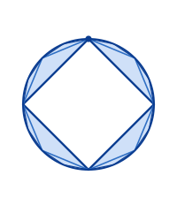
Esquema propio. -
350 a.C.
Eudoxo: el truco se vuelve teoría
Eudoxo de Cnido llevó el procedimiento a una forma rigurosa y lo usó para calcular áreas y volúmenes. Lo decisivo fue una técnica de comparación que se parece mucho a lo que veremos en el diagrama de la suma aritmética: si por cada cantidad se toma una cantidad mayor, y entre ambas hay muchísimas intermedias, entonces las primeras están por debajo y las últimas por encima. Acotación por los dos lados, igual que Antifón.[8]
La primera demostración formal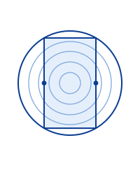
Esquema propio. -
300 a.C.
Euclides: seis proposiciones
El libro XII de los Elementos tiene dieciocho proposiciones. Seis de ellas las demuestra Euclides con el método de exhaución: la XII.2, la XII.5, la XII.10, la XII.11, la XII.12 y la XII.18. Entre esas seis están, por ejemplo, que el cono es un tercio del cilindro y que la esfera crece como el cubo de su diámetro. Para llegar a esas seis, el libro X desarrolla una teoría de razones: es, con diferencia, el libro más largo y más complejo de los trece, y sus 115 proposiciones son casi una cuarta parte de las 465 de toda la obra. El precio de rigor fue un libro entero de preparación.[2]
El rigor paga caro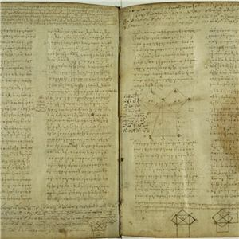
Biblioteca Apostólica Vaticana, Vat. gr. 190. Dominio público. -
287–212 a.C.
Arquímedes: el primer cálculo documentado de una suma geométrica
Para determinar el área de un segmento de parábola, Arquímedes dibujó dentro figuras cada vez más grandes, calculó sus áreas y repitió el proceso. Nunca llegó a dibujar el segmento exacto: se iba «agotando» el error hasta hacerlo tan pequeño como quisiera. Para lograrlo hizo lo que nadie había hecho: escribir el área como una suma de razones, , una suma de razón 1/4: el primer cálculo documentado de la suma de una serie geométrica. En la Cuadratura de la parábola demuestra con ella que el área del segmento parabólico es del área del triángulo inscrito. La obra está dirigida a Dositeo y es del siglo III a.C.[2]
Nace la serie geométrica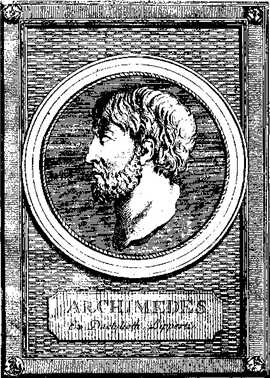
Grabado de Riedel. Dominio público. -
c. 200 a.C.
Pingala: la cuenta que ya estaba en la India
Mucho antes de que existiera el nombre «Fibonacci», los matemáticos de la India ya usaban esa cuenta para contar los cantos del samaveda: los cantos de una, de dos y de tres. El número se conocía y se llamaba meru-prastāra, y la otra forma del mismo nombre es mātrā-meru. Pingala dio el fundamento combinatorio; la sucesión aditiva la formalizaron después Virahānka (siglos VI–VIII) y Hemachandra (hacia 1150).[5]
La India llega antesManuscrito de Bakhshali, Bodleian Library. La institución lo data entre los siglos III y IV d.C. Dominio público. -
1202
Leonardo de Pisa: la recursión
En el Liber Abaci, Leonardo de Pisa planteó un problema de cría dinámica: una pareja de conejos produce otra cada mes, y cada pareja nueva empieza a reproducirse al mes siguiente. La solución 1, 1, 2, 3, 5, 8, 13, 21… se construye con sumas: cada término es el resultado de sumar los dos anteriores. Lo que hoy llamamos recursión nació aquí como un truco para contar conejos.[3]
Cada término nace de los dos previosGrabado de hacia 1850, autor sin identificar. Dominio público. -
c. 1350
Nicole Oresme: la serie que no se detiene
Aquí está la primera demostración de que la serie armónica diverge. Oresme agrupa los términos en bloques de potencias de dos: , y cada bloque suma al menos 1/2, así que la suma crece sin tope.[9]
La armónica diverge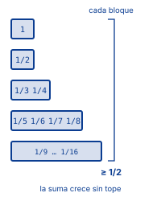
Esquema propio. -
1665
Newton: el binomio y las series infinitas
Newton desarrolló hacia 1665 el binomio para exponentes que no son enteros: una regla para elevar (1 + x) a cualquier potencia y escribir el resultado como una suma de términos que se encogen. Con él nació el método general que convirtió las series de potencias en el instrumento central del cálculo. La pregunta de cuándo una de esas sumas se queda quieta no se respondió de verdad hasta Cauchy, en 1821.[3]
Se dice la palabra convergerRetrato de 1689. Dominio público. -
1676
Leibniz: la notación y el problema
Leibniz escribió la identidad y fue el primero en estudiar en serio la notación con sigma. Su serie es correcta, pero converge tan despacio que hacen falta millones de términos para aproximar π. El problema no era de exactitud sino de velocidad: un límite correcto que llega demasiado tarde. Ese hueco definió buena parte de la matemática del siglo XIX.[6]
Un límite correcto pero lentísimo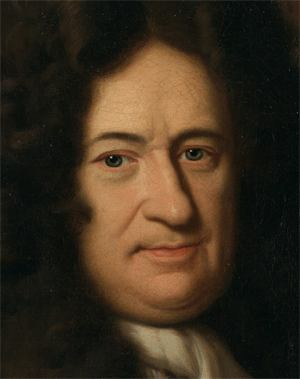
Christoph Bernhard Francke, hacia 1695. Dominio público. -
1735
Euler y el problema de Basilea
En 1650 el italiano Pietro Mengoli formuló un problema que había derrotado a todos los matemáticos vivos: sumar y decir qué número da. Euler lo resolvió en 1734 y el resultado se leyó ante la Academia de Ciencias de San Petersburgo el 5 de diciembre de 1735: era . Una suma de fracciones ordinarias igual al cuadrado de la circunferencia. Se publicó después en varios artículos, entre ellos el E41 de 1740 y el E63 de 1743.[4]
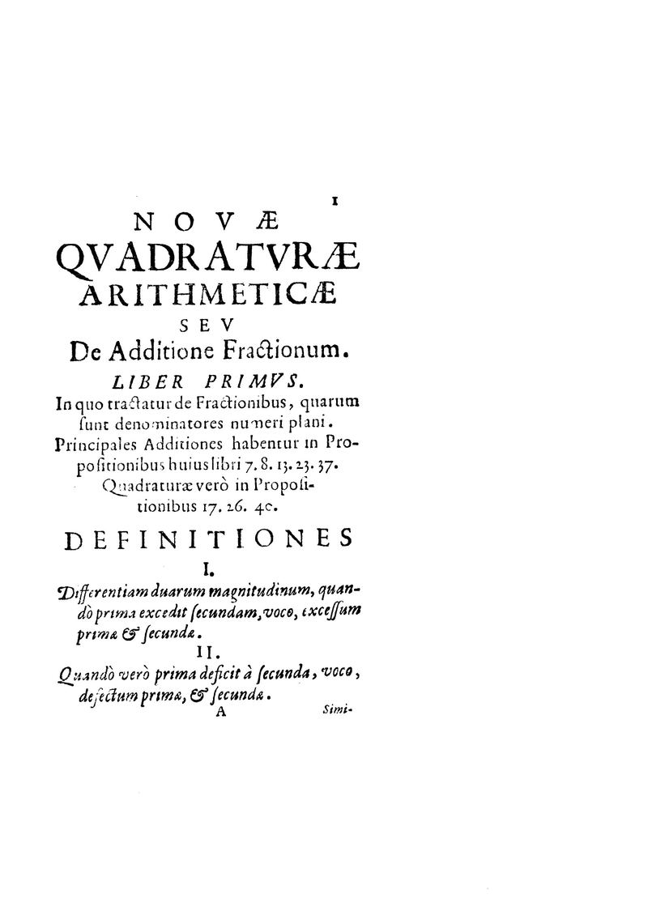
En 1650 Pietro Mengoli fue el primero en plantear el problema que Euler resolvió ochenta y cuatro años después. Pietro Mengoli, 1650. BEIC Foundation. Dominio público.
El número e viene de otro hilo: lo introdujo Jakob Bernoulli en 1683, estudiando el interés compuesto que se capitaliza sin parar, y ya era el límite de . Euler adoptó la letra e en 1727-1728, y la usó impresa por primera vez en la Mechanica, de 1736.[6]
El número más misteriosoJakob Emanuel Handmann. Dominio público. -
1821
Cauchy: el límite, con palabras
En el Cours d'analyse de 1821 Cauchy escribe por primera vez una definición de límite con palabras en vez de con dibujos, y con ella el criterio de Cauchy de convergencia. Hasta entonces «sumar infinitos términos» era una intuición; desde aquí es una definición.[7]
De la intuición a la definición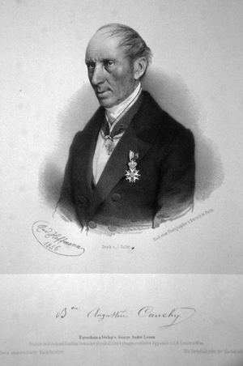
Rudolf Hoffmann, litografía, 1856. Austrian National Library. Dominio público. -
1859
Riemann: la serie se vuelve función
Riemann deja de mirar las series una por una y las mete todas dentro de una sola función, la zeta. Ahí aparecen , y , que resultó irracional en 1978 (Roger Apéry). La hipótesis de Riemann —dónde están los ceros de esa función— es desde el año 2000 uno de los siete Problemas del Milenio, con un premio de un millón de dólares.[1] La irracionalidad de la demostró Roger Apéry en 1978.[3]
Una función para todas las series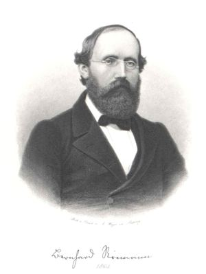
August Weger, 1863. Bildarchiv Austria. Dominio público.
Las nueve imágenes de personas son retratos y grabados de época, y el manuscrito de Bakhshali es una reproducción de un escrito indio. Todos ellos son obras en dominio público, es decir, que se pueden usar sin pedir permiso. Los dibujos de Antifón, de Eudoxo y de Oresme están hechos a mano para este sitio. Origen: Wikimedia Commons.
Sumar la aritmética: el truco de la doble fila
La fórmula de la progresión aritmética no se deduce: se construye. Se escribe la misma suma dos veces, una al derecho y otra al revés, y se suman por columnas. Cada columna da lo mismo, así que el total se elimina solo.
- Escribimos la serie S y debajo la misma serie al revés. La segunda fila no es una serie distinta: es la misma, escrita del otro lado.
- Sumamos por columnas, no término a término. La columna 1 es 1 + 8, la columna 2 es 2 + 7, la columna 3 es 3 + 6. Todas dan lo mismo, y ese valor es siempre el primero más el último: .
- Hay n columnas, y cada una da . Así que la suma de las dos filas es .
- Pero la suma de las dos filas es justamente 2S, porque estamos sumando la misma serie dos veces. Si , basta dividir entre dos.
El truco funciona: el paso 4 no necesita saber nada nuevo, solo reconocer que se estaba contando la misma serie dos veces. Por eso la fórmula es tan corta y por eso se enseña en secundaria: no hay nada más allí. La misma idea de apareamiento la usaremos en el próximo diagrama, pero allí con multiplicar en vez de sumar.
Sumar la geométrica: multiplicar y cancelar
Con una progresión geométrica el truco es distinto: en vez de escribir la serie al revés, se multiplica por la razón. Al multiplicar, cada término cae sobre el siguiente, como fichas que se desplazan un lugar. Al restar, todo el medio se desaparece solo.
- Partimos de una progresión geométrica de razón q.
- Multiplicamos toda la igualdad por q. Cada término se convierte en el siguiente, y el primero — el 1 — se multiplica por q y se convierte en q. La serie queda corrida un lugar a la derecha.
- Restamos. El término q que estaba en la primera fila se anula con el de la segunda; lo mismo con q², q³ y todos los intermedios. Solo quedan dos bloques: el 1 de arriba, que no tenía pareja, y el de abajo, que todavía no había aparecido.
- Lo que queda a la izquierda es (1 − q)·S. Lo que queda a la derecha es . Como las dos sumas eran iguales, los dos lados son lo mismo y basta dividir entre (1 − q).
Qué pasa si q es mayor que 1
El mismo diagrama funciona, pero el resultado se invierte. Si la razón es mayor que 1, los bloques ya no se encogen: cada uno es más grande que el anterior, la resta deja de ser una fracción corta y la serie ya no converge. La construcción es la misma; lo que cambia es hacia dónde apuntan los bloques.
La serie que engaña
Hay una serie que rompe todas las intuiciones: la que sale de sumar el uno, la mitad, un tercio, un cuarto… Esta es la que obligó a definir la convergencia con cuidado.
La serie diverge: crece sin tope, aunque sus términos se hagan cada vez más pequeños. Es el ejemplo que obligó a definir la convergencia con cuidado, porque todo lo que parece intuitivo dice que esta suma tiene que acabar.
| n | Hn | ¿llega? |
|---|---|---|
| 10 | 2,9289682540 | No |
| 100 | 5,1873775176 | No |
| 1 000 | 7,4854708606 | No |
| 10 000 | 9,7876060360 | No |
| 1 000 000 | 14,3927267229 | No |
| Por mucho que crezca n | 14,3927267229 | No: la suma sigue subiendo |
| Calculado con mpmath a 30 dígitos. La diferencia entre H10 y H1000000 es de 11,5: para crecer 11,5 hay que multiplicar por 100 000 el número de términos. | ||
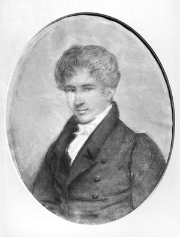
Johan Gørbitz, 1826. Norsk portrettarkiv / Riksantikvaren. Dominio público.
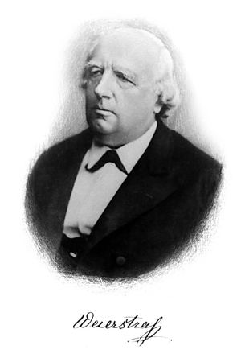
Autor y fecha sin identificar. Wikimedia Commons. Dominio público.
Las cuatro fórmulas en números
Todo lo construido hasta aquí, ordenado en una sola tabla para poder consultarlo de un vistazo.
Aritmética
- Se escribe la serie S y debajo la misma serie al revés
- La segunda fila no es una serie distinta: es la misma, escrita del otro lado
- Se suman por columnas, no término a término
- Todas dan lo mismo, y ese valor es siempre el primero más el último
- Hay n columnas, y la suma de las dos filas es n(a1 + an)
- Esa suma es 2S, porque se estaba contando la misma serie dos veces
Resultado: n(a₁ + aₙ) / 2
Geométrica
- En vez de escribir la serie al revés, se multiplica por la razón
- Cada término cae sobre el siguiente y la fila se desplaza un lugar
- Al restar, todo el medio se desaparece solo
- Solo quedan el 1 de arriba, que no tenía pareja, y el qn de abajo
- A la izquierda queda (1 − q)·S y a la derecha 1 − qn
- Como las dos sumas eran iguales, basta dividir entre (1 − q)
Resultado: a₁(1 − qⁿ) / (1 − q)
| Fórmula | Valor | En una frase |
|---|---|---|
| Suma aritmética | n(a₁ + aₙ) / 2 | Apareamiento. Invariante bajo cualquier diferencia. |
| Suma geométrica | Multiplicar por q y cancelar el centro. | |
| Razón áurea | φ = 1,6180339887… | El límite de los cocientes de términos consecutivos de Fibonacci, y la razón que resuelve x = 1 + 1/x. |
| Problema de Basilea | , resuelto por Euler en 1734. | |
| Las dos primeras salen de los diagramas de arriba, palabra por palabra. La razón áurea no sale de ninguno de los dos: por eso lleva su propia explicación debajo. | ||
La razón áurea: donde las dos filas se tocan
Las dos construcciones que acabamos de ver casi nunca se cruzan: una suma avanza con diferencias constantes, la otra con razones constantes. Hay un único caso en que se tocan, y es el más simple de todos: la progresión constante, la que tiene diferencia 0 y razón 1, que es a la vez aritmética y geométrica. Cualquier otra es solo una de las dos cosas.
La razón áurea viene por otro camino, y merece su propia historia. φ = 1,6180339887… es el límite de los cocientes de términos consecutivos de la sucesión de Fibonacci: y el siguiente cociente ya está más cerca que el anterior. También es la razón que resuelve : la razón única para la que el siguiente término de la progresión de Fibonacci es exactamente el anterior multiplicado por él mismo.
Fuentes consultadas
Las fechas y los datos de esta parte se verificaron en las fuentes siguientes.
- Katz, V. J. (2019). A History of Mathematics: An Introduction (3.ª ed.). Addison-Wesley (Pearson).
- Heath, T. L. (1981). A History of Greek Mathematics (vols. 1-2). Dover Publications. (Orig.: Oxford, Clarendon Press, 1921.)
- Boyer, C. B.; Merzbach, U. C. (2011). A History of Mathematics (3.ª ed.). John Wiley & Sons.
- Euler, L. (1740). «De summis serierum reciprocarum» (E41), Commentarii academiae scientiarum Petropolitanae 7, pp. 123-134. Planteado por Pietro Mengoli en 1650; resuelto por Euler en 1734 y leído ante la Academia de Ciencias de San Petersburgo el 5 de diciembre de 1735.
- Plofker, K. (2009). Mathematics in India. Princeton University Press. El cálculo de la sucesión ya se usaba en la India desde Pingala, hacia el 200 a.C., con el nombre de meru-prastāra.
- Euler, L. (1748). Introductio in analysin infinitorum. Lausana.
- Cauchy, A.-L. (1821). Cours d'analyse. París.
- Heath, T. L. (1921). A History of Greek Mathematics. Oxford, Clarendon Press. Capítulos 5 y 10.
- Oresme, N. (h. 1350). Quaestiones super geometriam Euclidis, citado en Boyer–Merzbach (2011).
Ya sabes cómo se arman las series por dentro. La otra mitad del apartado — escrita por Alejandro Guerrero — responde a otra pregunta: para qué sirve todo esto en la vida de todos los días.